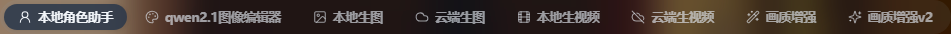
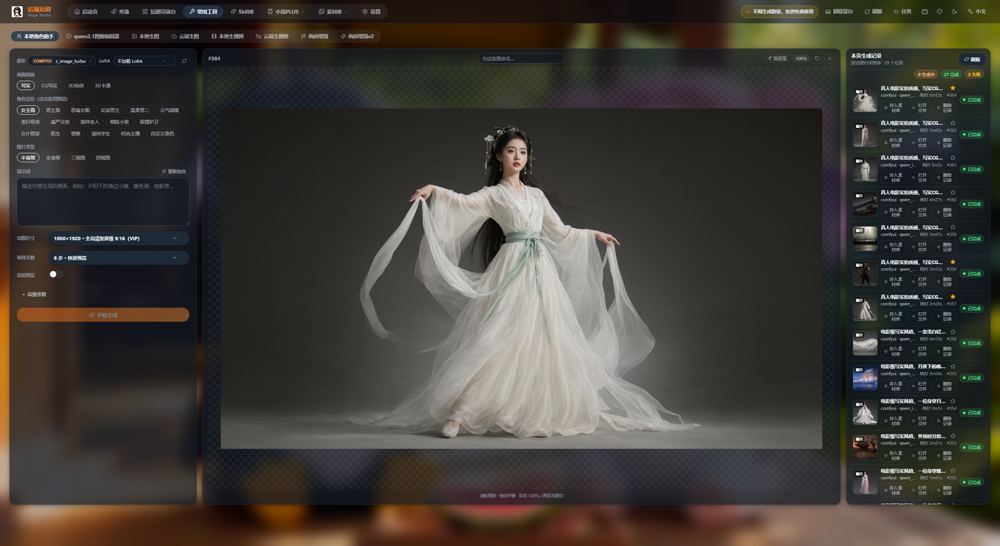
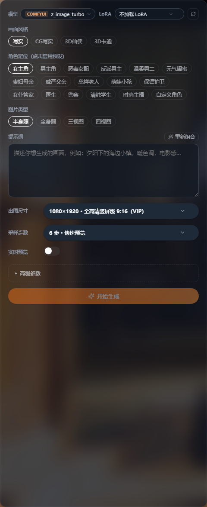
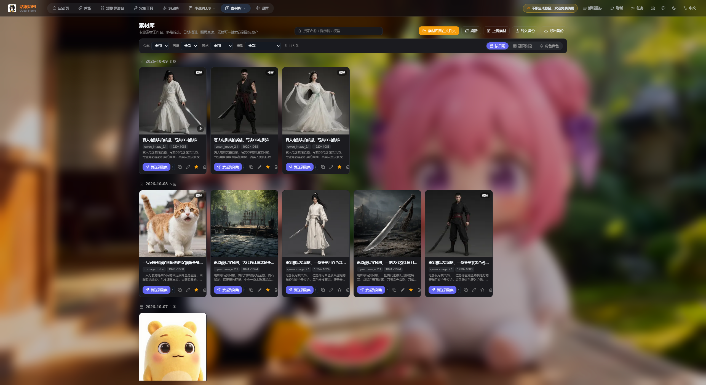
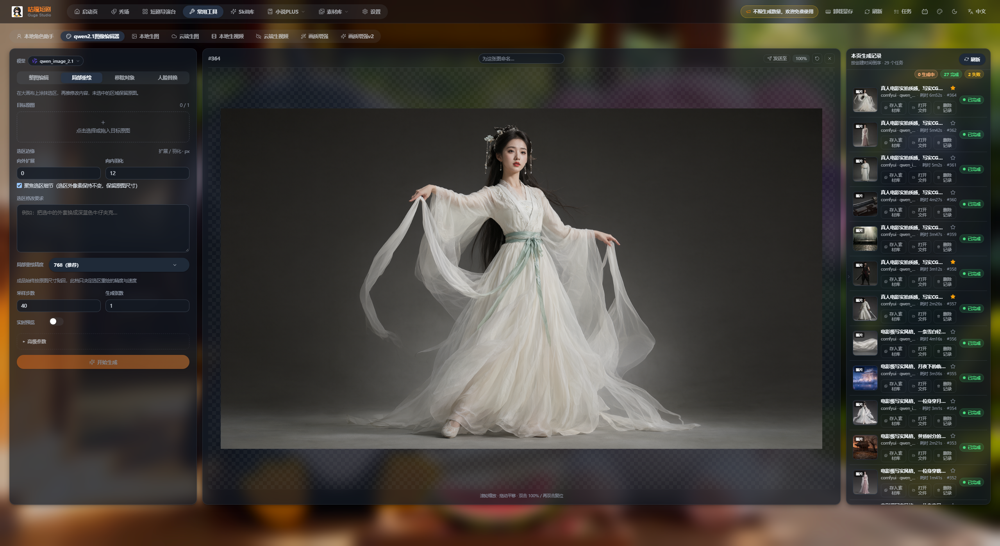
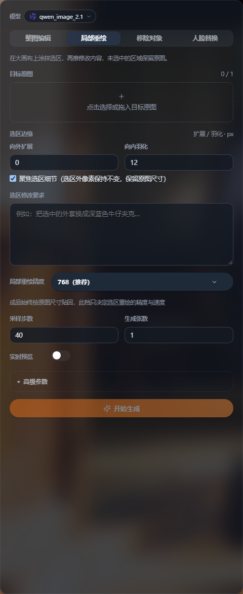
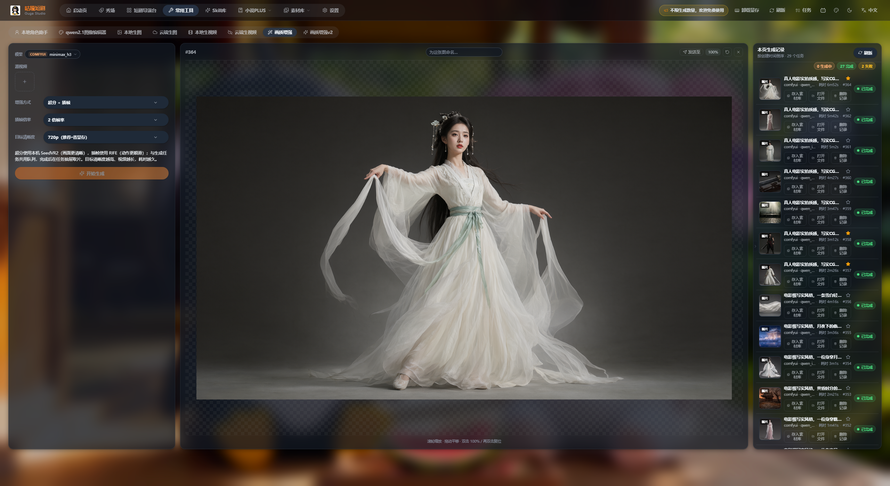
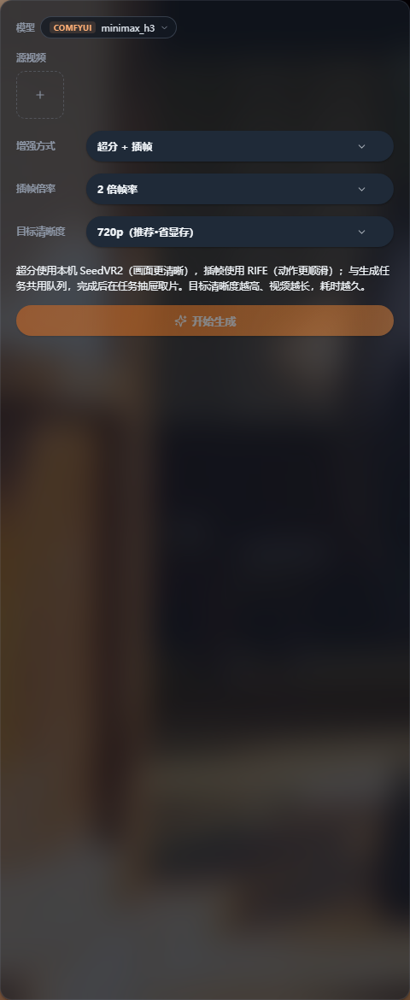
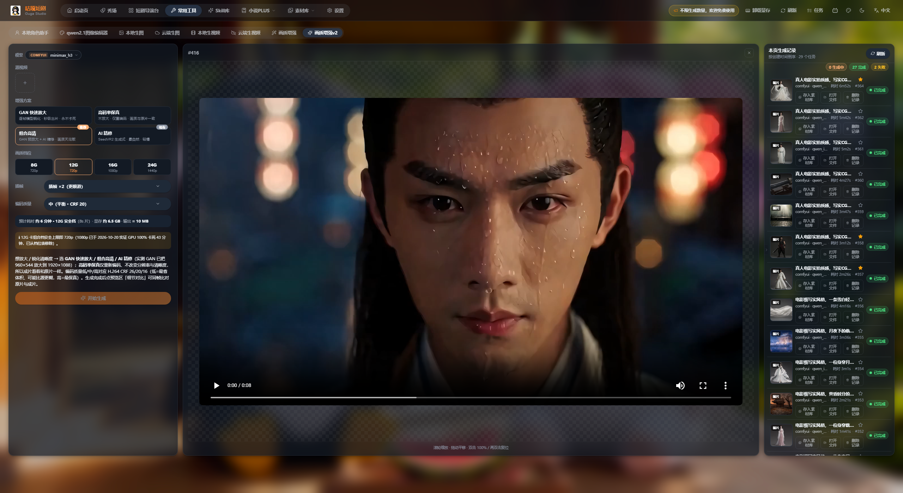
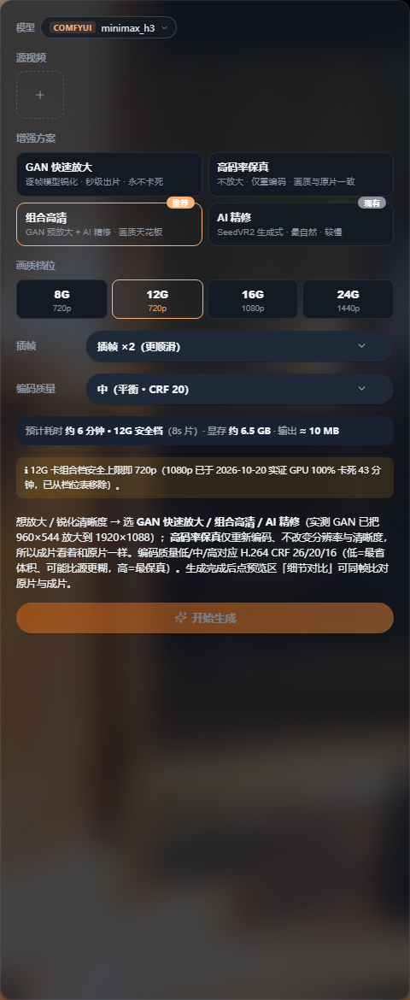

「常用工具」是咕嘎的独立工具台，不依附任何短剧项目，随用随做、随做随存。本教程覆盖 本地角色助手、qwen2.1 图像编辑器、视频画质增强、视频画质增强 v2 四个已上线工具， 并如实说明 场景助手 的当前状态与替代方案。所有界面图均取自软件真实运行界面（2560×1400 宽屏、深色模式）。
同一套三栏骨架，八个标签页。左边填参数，中间看结果，右边管历史。

| 区域 | 内容 |
|---|---|
| 左栏 | 参数面板：模型、LoRA、提示词、尺寸、步数、模式选择等，随标签变化 |
| 中栏 | 预览舞台：图片或视频大图，支持滚轮缩放 / 拖动平移 / 双击 100%，顶部可命名、发送至、刷新、关闭 |
| 右栏 | 本页生成记录：状态统计（生成中 / 完成 / 失败）、缩略图、时长、存入素材库 / 打开文件 / 删除记录、收藏星标 |
点选即成图的角色生成器：选风格 → 选角色定位 → 选图片类型，提示词自动组合，本地 ComfyUI 出图不花钱。


| 控件 | 说明 |
|---|---|
| 模型 | 默认 COMFYUI z_image_turbo（一键写入本地配置后可用）；带图标的是本地模型，右侧刷新按钮可重新拉取 |
| LoRA | 下拉选择或「手动输入 LoRA 文件名…」（在 models/loras 下），可调 LoRA 强度并刷新列表 |
| 画面风格 | 写实 / CG写实 / 3D仙侠 / 3D卡通 |
| 角色定位（点击套用预设） | 女主角、男主角、恶毒女配、反派男主、温柔男二、元气闺蜜、贵妇母亲、威严父亲、慈祥老人、萌娃小孩、保镖护卫、女仆管家、医生、警察、清纯学生、时尚主播……以及「自定义角色」 |
| 图片类型 | 半身照 / 全身照 / 三视图 / 四视图 |
| 提示词 | 选择风格+定位+类型后自动组合，可自由编辑；点「重新组合」按当前选项重写（会覆盖手改内容） |
| 出图尺寸 | 预设档位（入门预览级 4:3 / 社交媒体通用级 16:9 / 全高清级 16:9 / 2K超清级 / 专业创作级 4:3 / 4K旗舰级；竖屏另有 9:16、3:4、19.5:9 档），也可自定义宽高（64~4096，建议 8 的倍数） |
| 采样步数 | 按模型给出 4/6/8/12 等档位；步数越多细节越好、耗时越长 |
| 实时预览 | 生成过程中在中间画布实时显示采样预览图 |
| 高级参数 | 随机种子（-1 随机）、CFG 引导强度、负向提示词、采样器、调度器 |
| 开始生成 | 提交任务，完成后出现在中间预览与右栏记录 |
这是产品规划中的工具，当前版本尚未上线，界面里没有入口。本节说明它的定位与现在的替代做法。
| 方案 | 做法 | 适合 |
|---|---|---|
| 本地生图 / 云端生图 | 标签切到「本地生图」或「云端生图」，在提示词里手写场景描述（主体 + 环境 + 光线 + 风格），生成后存入素材库 | 单个场景、临时用 |
| qwen2.1 图像编辑器 | 用一张参考图做整图编辑 / 局部重绘，把同一张图派生出多个角度 | 已有一张主图想改细节 |
| 短剧导演台 · 项目素材库 | 在剧集的「素材库」标签里让 Agent 自动提取场景并出图，人工微调后存为项目资产 | 推荐：场景与剧情强绑定，全片一致 |

本地 Qwen-Image-2.1 驱动的修图台：整图编辑、局部重绘、移除对象、人脸替换四种模式。


| 模式 | 做什么 |
|---|---|
| 整图编辑 | 按提示词整体修改画面（换背景、改服装、改风格） |
| 局部重绘 | 在画布上框选一块区域，只重绘这一块（换衣服、修手、去掉路人） |
| 移除对象 | 移除方式：专用移除 LoRA（实验版）或仅提示词描述；可调消除强度 |
| 人脸替换 | 人脸替换方式：BFS 身份增强（推荐）或仅提示词描述；可调身份增强强度 |
| 字段 | 说明 |
|---|---|
| 目标原图 | 点击选择或拖入目标原图 |
| 选区边缘 | 向外扩展 / 向内羽化；勾选「覆盖选区尺寸」可保证选区外像素保持不变、保留原图尺寸 |
| 选区像素要求 | 例如「把选中的衣服纹理还原成细节」，描述越具体越准 |
| 局部重绘基础模型 | 默认 768（推荐）；成品交付按图选 9 张贴图，提示词按 9 段描述画面与精度 |
| 采样步数 / 生成张数 | 默认 40 步 / 1 张 |
| 实时预览 | 生成过程中在画布实时显示采样预览 |
| 透明背景 | Qwen-Image-2.1 为蒸馏模型，原生 RGBA 输出，保存为透明底 PNG |
| 高级参数 | 随机种子（-1 为随机）、CFG 引导强度、负向提示词 |
qwen_image_2.1。SeedVR2 超分 + RIFE 插帧，本地跑，不联网、不上传原片。


| 参数 | 说明 |
|---|---|
| 源视频 | 上传或选择本地视频 |
| 增强方式 | 超分 + 插帧（画面更清晰 + 动作更顺滑）；也可只做超分或只做插帧 |
| 插帧倍率 | 如 2 倍帧率 |
| 目标清晰度 | 如 720p（推荐·省显存）；越高越清晰、耗时越久 |
四种增强方案 + 显存档位 + 编码质量，画质天花板更高，也更不容易卡死。


| 方案 | 特点 | 推荐给 |
|---|---|---|
| GAN 快速放大 | 逐帧模型锐化，秒级出片，永不卡死 | 老片抢救、时间紧 |
| 高码率保真 | 不放大，仅重编码，画质与原片一致 | 只想改善码率与兼容度 |
| 组合高清（推荐） | GAN 预放大 + AI 精修，画质天花板 | 正式交付 |
| AI 精修 | SeedVR2 生成式，最自然，但较慢 | 追求质感、不赶时间 |
| 参数 | 说明 |
|---|---|
| 分辨率档位 | 8G 720p / 12G 720p / 16G 1080p / 24G 1440p —— 按自己的显存选，系统会显示预计时长与临时显存 |
| 插帧 | 插帧 ×2（更顺滑） |
| 编码质量 | 中（平衡 · CRF 20）；CRF 越小越清晰、体积越大 |
| 预计时长 / 临时显存 | 面板会直接给出「预计约 X 分钟 · 临时约 Y GB」的提示，按它排期 |
所有工具的产出都汇到右栏记录，并可一键入库或发到剧集。
| 现象 | 原因与处理 |
|---|---|
| 提示「尚未配置可用的生图/视频服务」 | 去 设置 → AI 服务 添加并启用，或用 ComfyUI 一键配置写入本地服务 |
| 出图尺寸/步数被锁 | 分辨率 0.6 以上、采样步数超过 8、生成分辨率超过 1920×1080、生成加速均属 VIP 功能，免费档用 8 步以内与较低分辨率 |
| 提示词被覆盖了 | 「重新组合」会按当前选项重写提示词并覆盖手改内容；想保留手改就别点它 |
| 局部重绘边缘突兀 | 勾选「覆盖选区尺寸」保持选区外像素不变，并适当调「选区边缘」的向外扩展 / 向内羽化 |
| 负向提示词不起作用 | Qwen-Image-2.1 是蒸馏模型，CFG=1 时负向提示词不参与采样，把 CFG 调到大于 1 |
| 画质增强任务排队很久 | 与生成任务共用队列；面板会给出预计时长，可先降档位（8G 720p）或改用 GAN 快速放大 |
| 增强后文件找不到 | 在任务抽屉取片，或在生成记录里点「打开文件」定位到磁盘 |
| 找不到「场景助手」 | 该工具尚未开发，界面无入口；请用「本地生图」或「短剧导演台 → 项目素材库」 |